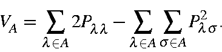

Next: Anisotropy
Up: Bond Orders
Previous: Bond Orders
A measure of the valency of an atom.

Typical valencies are: 1.0 for hydrogen, 2.0-2.4 for oxygen to 3.8-4.0 for
carbon. The maximum valency of an atom is equal to the number of atomic
orbitals, e.g. 1 or 4 (for a sp3 system), or 9 (in atoms with
d orbitals). This maximum
is only achieved when the orbital population is 1.00, and all off-diagonal
terms on the atom are zero.
J. J. P. Stewart
Fujitsu Ltd. 2001